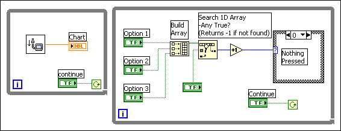
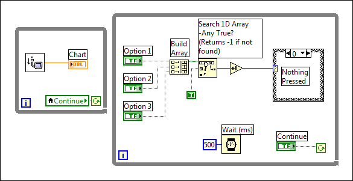
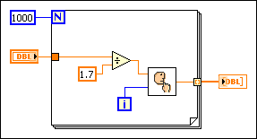
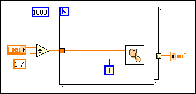
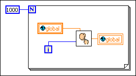
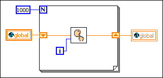
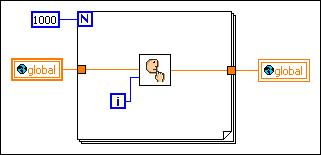

Although LabVIEW compiles VIs and produces code that generally executes very quickly, you want to obtain the best performance possible when working on time-critical VIs. This section discusses factors that affect execution speed and suggests some programming techniques to help you obtain the best performance possible.
Examine the following items to determine the causes of slow performance:
Other factors, such as execution overhead and subVI call overhead, usually have minimal effects on execution speed.
Input/Output (I/O) calls generally incur a large amount of overhead. They often take much more time than a computational operation. For example, a simple serial port read operation might have an associated overhead of several milliseconds. This overhead occurs in any application that uses serial ports because an I/O call involves transferring information through several layers of an operating system.
The best way to address too much overhead is to minimize the number of I/O calls you make. Performance improves if you can structure the VI so that you transfer a large amount of data with each call, instead of making multiple I/O calls that transfer smaller amounts of data.
For example, if you are creating a data acquisition (NI-DAQmx) VI, you have two options for reading data. You can use a single-point data transfer function such as the AI Sample Channel VI, or you can use a multipoint data transfer function such as the AI Acquire Waveform VI. If you must acquire 100 points, use the AI Sample Channel VI in a loop with a Wait function to establish the timing. You also can use the AI Acquire Waveform VI with an input indicating you want 100 points.
You can produce much higher and more accurate data sampling rates by using the AI Acquire Waveform VI, because it uses hardware timers to manage the data sampling. In addition, overhead for the AI Acquire Waveform VI is roughly the same as the overhead for a single call to the AI Sample Channel VI, even though it is transferring much more data.
Frequently updating controls on a front panel can be one of the most time-consuming operations in an application. This is especially true if you use some of the more complicated displays, such as graphs and charts. Although most indicators do not redraw when they receive new data that is the same as the old data, graphs and charts always redraw. If redraw rate becomes a problem, the best solutions are to reduce the number of front panel objects and keep the front panel displays as simple as possible. In the case of graphs and charts, you can turn off autoscaling, scale markers, anti-aliased line drawing, and grids to speed up displays.
As with other kinds of I/O, there is a certain amount of fixed overhead in the display of a control. You can pass multiple points to an indicator at one time using certain controls, such as charts. You can minimize the number of chart updates you make by passing more data to the chart each time. You can see much higher data display rates if you collect your chart data into arrays to display multiple points at a time, instead of displaying each point as it comes in.
When you design subVIs whose front panels are closed during execution, do not be concerned about display overhead. If the front panel is closed, you do not have the drawing overhead for controls, so graphs are no more expensive than arrays.
In multithreaded systems, you can use the Advanced�Synchronous Display shortcut menu item to set whether to defer updates for controls and indicators. By default, controls and indicators use asynchronous displays, which means that after the execution system passes data to front panel controls and indicators, it can immediately continue execution. At some point thereafter, the user interface system notices that the control or indicator needs to be updated, and it redraws to show the new data. If the execution system attempts to update the control multiple times in rapid succession, you might not see some of the intervening updates.
In most applications, asynchronous displays significantly speed up execution without affecting what the user sees. For example, you can update a Boolean value hundreds of times in a second, which is more updates than the human eye can discern. Asynchronous displays permit the execution system to spend more time executing VIs, with updates automatically reduced to a slower rate by the user interface thread.
If you want synchronous displays, right-click the control or indicator and select Advanced�Synchronous Display from the shortcut menu to place a checkmark next to the menu item.
|
Note��Turn on synchronous display only when it is necessary to display every data value. Using synchronous display results in a large performance penalty on multithreaded systems. |
You also can use the Defer Panel Updates property to defer all new requests for front panel updates.
Monitor settings and the controls that you place on a front panel also can improve the performance of a VI. Lower the color depth and resolution of your monitor and enable hardware acceleration for your monitor. Refer to the documentation for your operating system for more information about hardware acceleration. Using controls from the Classic palette instead of controls from the Modern palette also improves the performance of a VI.
Consider the following suggestions to manage the memory in a VI for optimal execution speed.
To improve editor responsiveness for large VIs, the LabVIEW compiler limits optimizations that could improve the execution speed of these VIs. When you finish developing a large VI, you can configure LabVIEW to prioritize execution speed over editor responsiveness. You can also configure LabVIEW to apply the full set of compiler optimizations to an entire build specification.
You can choose from many techniques to pass data within a LabVIEW application. The following list orders the efficiency of the most common ways.
Though you can use controls, control references, and Property Nodes to pass data between VIs, they were not designed for use as variables because they work through the user interface. Use local variables and the Value property only when performing user interface actions or when stopping parallel loops.
User interface actions are historically slow on computers. LabVIEW passes a double value through a wire in nanoseconds, and draws a piece of text in hundreds of microseconds to milliseconds. For example, LabVIEW can pass a 100K array through a wire in 0 nanoseconds to a few microseconds. Drawing a graph of this 100K array takes tens of milliseconds. Because controls have a user interface attached, using controls to pass data has the side effect of redrawing controls, which adds memory expense and slows performance. If the controls are hidden, LabVIEW passes the data faster, but because the control can be displayed at anytime, LabVIEW still needs to update the control.
Completing user interface actions uses more memory because LabVIEW switches from the execution thread to the user interface thread. For example, when you set the Value property, LabVIEW simulates a user changing the value of the control, stopping the execution thread and switching to the user interface thread to change the value. Then LabVIEW updates the operation buffer that stores data at the control and redraws the control if the front panel is open. LabVIEW then sends the data back to the execution thread in a protected area of memory called the transfer buffer. LabVIEW then switches back to the execution thread. The next time the execution thread reads from the control, LabVIEW finds the data in the transfer buffer and receives the new value for the execution buffer that stores data on the block diagram.
When you write to a local or global variable, LabVIEW does not switch to the user interface thread immediately. LabVIEW instead writes the value to the transfer buffer. The user interface updates at the next scheduled update time. It is possible to update a variable multiple times before a single thread switch or user interface update occurs. This is possible because variables operate solely in the execution thread.
Functional global variables can be more efficient than ordinary global variables because they do not use transfer buffers. Functional global variables exist only within the execution thread and do not use transfer buffers, unless you display their values on an open front panel.
When you have multiple block diagrams running in parallel, the execution system switches between them periodically. If some of these loops are less important than others, use the Wait (ms) function to ensure the less important loops use less time.
For example, consider the following block diagram.

There are two loops in parallel. One of the loops is acquiring data and needs to execute as frequently as possible. The other loop is monitoring user input. The loops receive equal time because of the way this program is structured. The loop monitoring the user's action has a chance to run several times a second.
In practice, it is usually acceptable if the loop monitoring the button executes only once every half second, or even less often. By calling the Wait (ms) function in the user interface loop, you allot significantly more time to the other loop.

When you use a For Loop, LabVIEW executes the loop iterations sequentially. If a For Loop is computationally intensive, consider running the loop iterations in parallel to improve performance. Parallel loop iterations allow LabVIEW to take advantage of multiple processors to execute the For Loop faster. However, parallel loop iterations must be independent of all other iterations. Use the Find Parallelizable Loops Results dialog box to determine which For Loops are parallelizable. To enable parallel loop iterations, right-click a For Loop border and select Configure Iteration Parallelism from the shortcut menu to display the For Loop Iteration Parallelism dialog box.
After you enable parallel loop iterations, the parallel instances terminal  appears below the count terminal . You can use this terminal to specify the number of loop instances for LabVIEW to use as well as to identify which instance is executing a particular iteration.
appears below the count terminal . You can use this terminal to specify the number of loop instances for LabVIEW to use as well as to identify which instance is executing a particular iteration.
Review the performance considerations before enabling parallel For Loop iterations.
National Instruments recommends that you display warnings in the Error list window so LabVIEW can warn you when parallel loop iterations might cause problems in a VI.
When you call a subVI, there is a certain amount of overhead associated with the call. This overhead is fairly small (on the order of tens of microseconds), especially in comparison to I/O overhead and display overhead, which can range from milliseconds to tens of milliseconds. However, this overhead can add up in some cases. For example, if you call a subVI 10,000 times in a loop, this overhead could significantly affect execution speed. In this case, you might want to consider embedding the loop in the subVI.
Another way to minimize subVI overhead is to turn subVIs into subroutines by selecting Execution from the Category pull-down menu in the VI Properties dialog box and then selecting subroutine from the Priority pull-down menu. However, there are some trade-offs. Subroutines cannot display front panel data, call timing or dialog box functions, allow debugging or automatic error-handling, or multitask with other VIs. Subroutines are generally most appropriate for VIs that do not require user interaction and are short, frequently executed tasks.
A third way to minimize subVI overhead is to inline subVIs into their calling VIs. When you inline a subVI, LabVIEW inserts the compiled code of the subVI into the compiled code of the calling VI. If you then make changes to the subVI, LabVIEW recompiles all calling VIs of that subVI to include those changes. Essentially, inlining a subVI removes the need to call the subVI at run time. Instead, LabVIEW executes the subVI code inside the compiled code of the calling VI.
Inlining subVIs is most useful for small subVIs, subVIs within a loop, subVIs with unwired outputs, or subVIs you call only once. To inline a subVI, place a checkmark in the Inline subVI into calling VIs checkbox on the Execution page of the VI Properties dialog box. You must also select Preallocated clone reentrant execution on the same page of the dialog box. LabVIEW automatically preallocates clones for each instance when it inlines the subVI.
A subVI that you want to inline cannot have any of the following characteristics:
Even if the subVI does not have any of the previous characteristics, LabVIEW does not inline the subVI into the following kinds of calls:
Finally, when you inline a subVI, LabVIEW ignores any priority or preferred execution settings.
Refer to the VI Execution Properties VI in the examples\Performance\VI Properties for an example of the performance improvements that result from inlining a subVI.
 Open example�
Open example�
 Find related examples
Find related examples
Network-published shared variables incur significant CPU and memory overhead. If your application uses a large number of network-published shared variables, consider using the Simple Messaging Reference Library (STM) instead. Refer to the support document at ni.com to learn more about STM.
If you need to send a continuous stream of data from one computing device to one other computing device, use the Network Streams functions.
Avoid putting a calculation in a loop if the calculation produces the same value for every iteration. Instead, move the calculation out of the loop and pass the result into the loop.
For example, examine the following block diagram.

The result of the division is the same every time through the loop; therefore you can increase performance by moving the division out of the loop, as shown in the following block diagram.

Refer to the following block diagram.

If you know the value of the global variable is not going to be changed by another concurrent block diagram or VI during this loop, this block diagram wastes time by reading from the global variable and writing to the global every time through the loop.
If you do not require the global variable to be read from or written to by another block diagram during this loop, you might use the following block diagram instead.

Notice that the shift registers must pass the new value from the subVI to the next iteration of the loop. The following block diagram shows a common mistake some beginning users make. Since there is no shift register, the results from the subVI never pass back to the subVI as its new input value.
